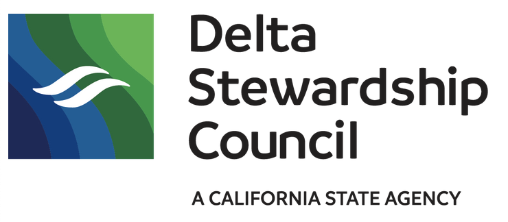

NCEAS Open Science Synthesis for the Delta Science Program
Overview


About this training
NCEAS Open Science Synthesis training consists of three 1-week long workshops, geared towards early career researchers. Participants engage in a mix of lectures, exercises, and synthesis research activities to conduct synthesis science and implement best practices in open data science.
Why NCEAS
The National Center for Ecological Analysis and Synthesis (NCEAS), a research affiliate of UCSB, is a leading expert on interdisciplinary data science and works collaboratively to answer the world’s largest and most complex questions. The NCEAS approach leverages existing data and employs a team science philosophy to squeeze out all potential insights and solutions efficiently - this is called synthesis science.
NCEAS has over 25 years of success with this model among working groups and environmental professionals. Together with the Delta Science Program and the Delta Stewardship Council we are excited to pass along skills, workflows, mindsets learn throughout the years.
Week 2: Open Tools for Analysis and Visualization
Aug 28 - Sep 1, 2023
- Strengthen core knowledge of version control and workflow
- Approaches for data visualization including geospatial data
- Data tools for qualitative data
- Building scientific websites with R and Shiny
Schedule

Next training
Week 3: Scaling up and presenting synthesis
October 23 – 27, 2023
- Big data workflows and parallel computing
- GitHub Workflows
- Presenting results using Shiny or flexdashboards
- Revisit reproducible and git workflows
- Synthesis presentations and next steps
Code of Conduct
By participating in this activity you agree to abide by the NCEAS Code of Conduct.
About this book
These written materials are the result of a continuous and collaborative effort at NCEAS with the support of DataONE, to help researchers make their work more transparent and reproducible. This work began in the early 2000’s, and reflects the expertise and diligence of many, many individuals. The primary authors for this version are listed in the citation below, with additional contributors recognized for their role in developing previous iterations of these or similar materials.
This work is licensed under a Creative Commons Attribution 4.0 International License.
Citation: Halina Do-Linh, Camila Vargas Poulsen. 2023. openS for USGS Climate Adaptation Postdoctoral (CAP) Fellows Program. Week One. NCEAS Learning Hub & USGS Climate Adaptation Science Centers (CASCs).
Additional contributors: Ben Bolker, Julien Brun, Amber E. Budden, Jeanette Clark, Samantha Csik, Stephanie Hampton, Natasha Haycock-Chavez, Samanta Katz, Julie Lowndes, Erin McLean, Bryce Mecum, Deanna Pennington, Karthik Ram, Jim Regetz, Tracy Teal, Daphne Virlar-Knight, Leah Wasser.
This is a Quarto book. To learn more about Quarto books visit https://quarto.org/docs/books.